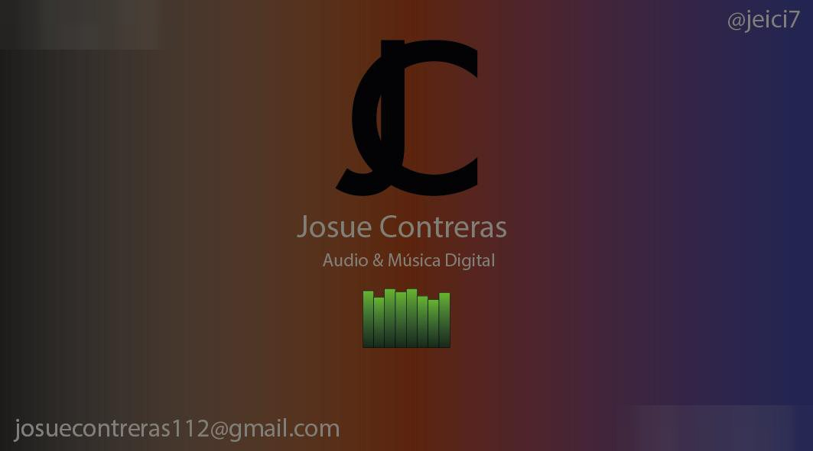
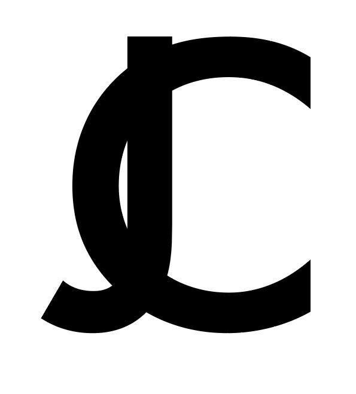
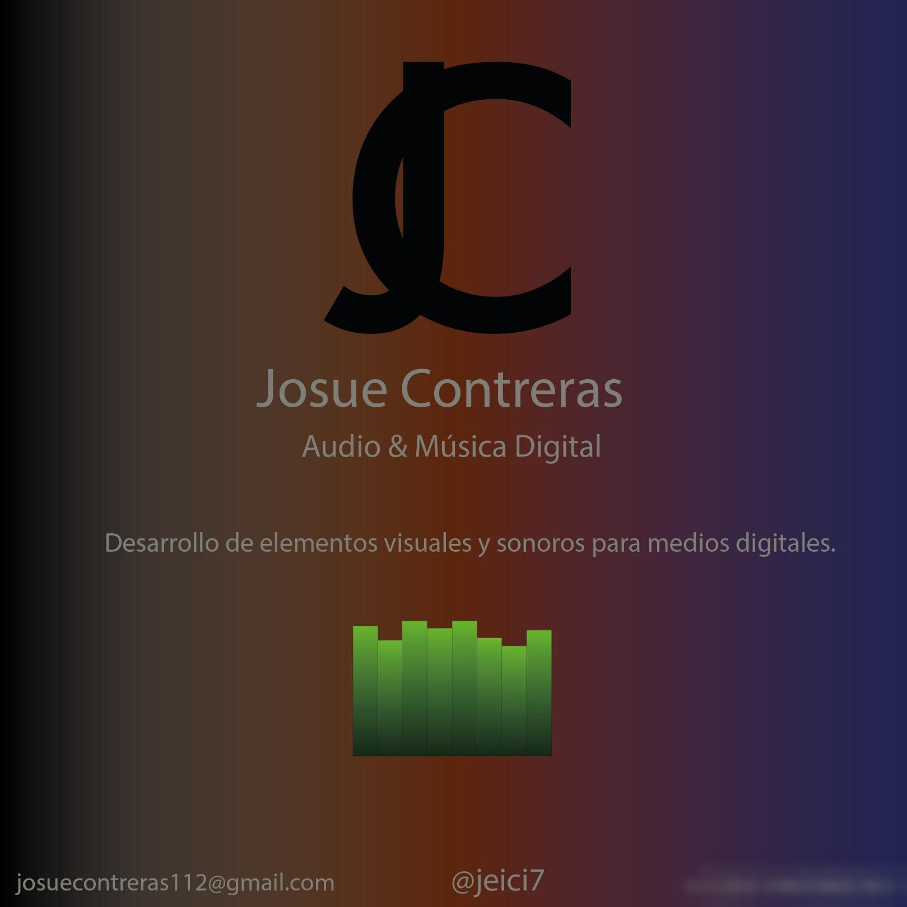

Tipografía e identidad · 2025
Monograma JC
Identidad personal y sus aplicaciones
- Contexto
- Fundamentos de Tipografía, UVM
- Fecha
- diciembre de 2025
- Mi rol
- Diseño del monograma y de sus aplicaciones
- Herramientas
- Adobe Illustrator

El reto
Construir un monograma que representara mi estilo y comprobar que funciona en soportes impresos y digitales sin perder coherencia.
Proceso
Uní la J y la C en una sola forma y la llevé a una tarjeta de presentación, una hoja membretada y una publicación cuadrada de 1000 px. Trabajé en CMYK para los impresos y en RGB para las pantallas, y cuidé el aire y la legibilidad en cada formato.
Resultado
Entendí que una identidad no solo se diseña: se prueba en cada aplicación. El mismo monograma firma este portafolio.

